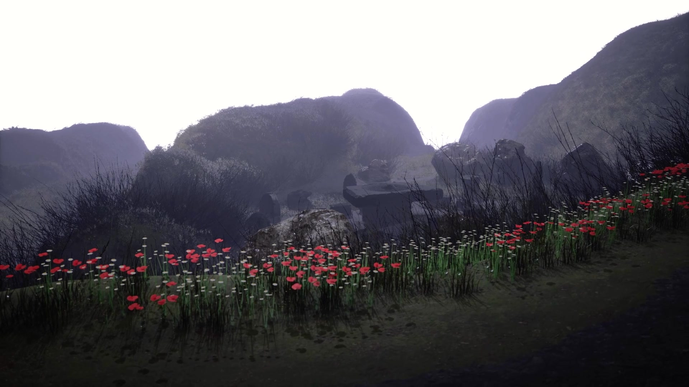
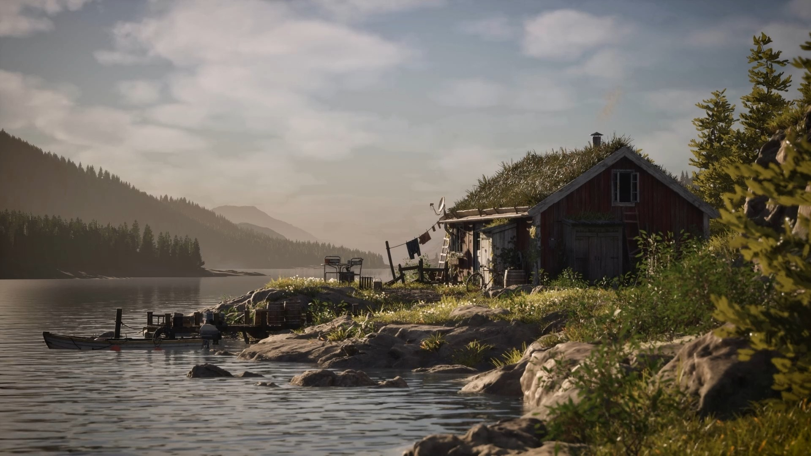
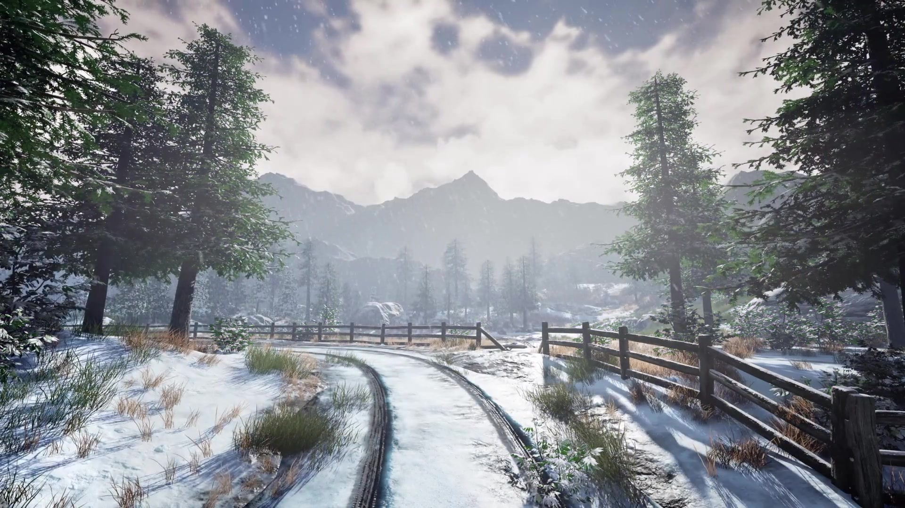
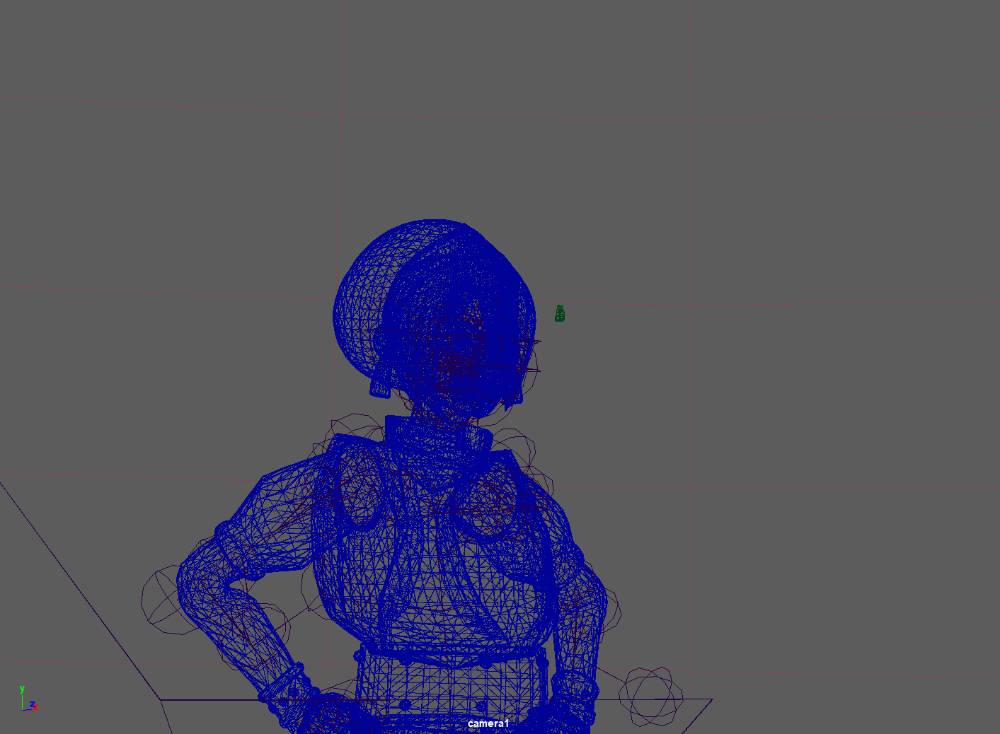
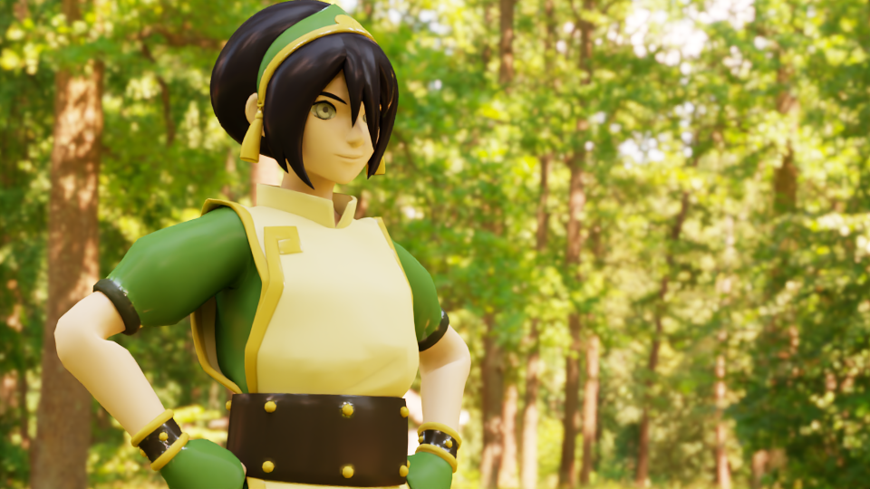
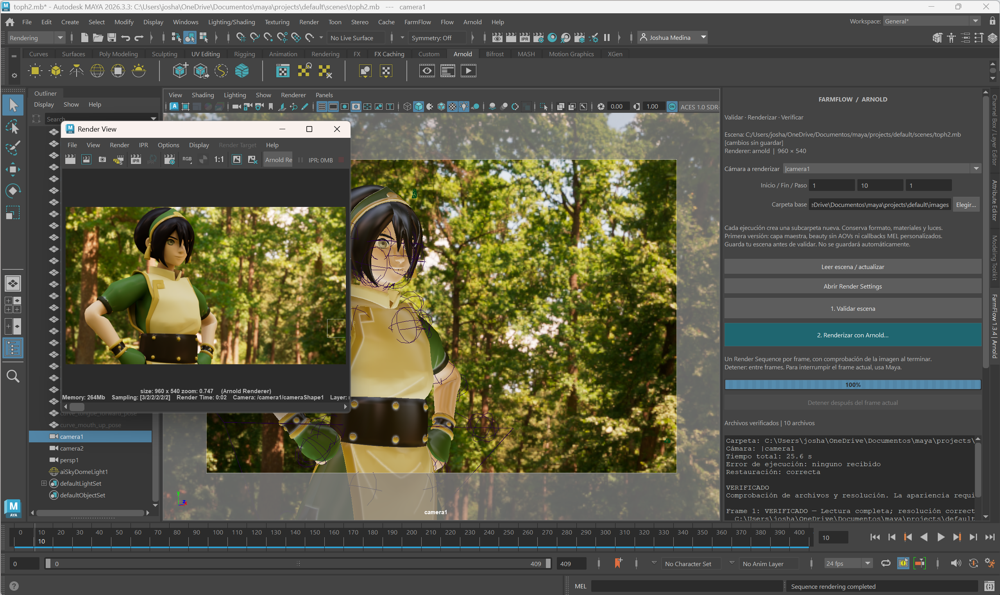
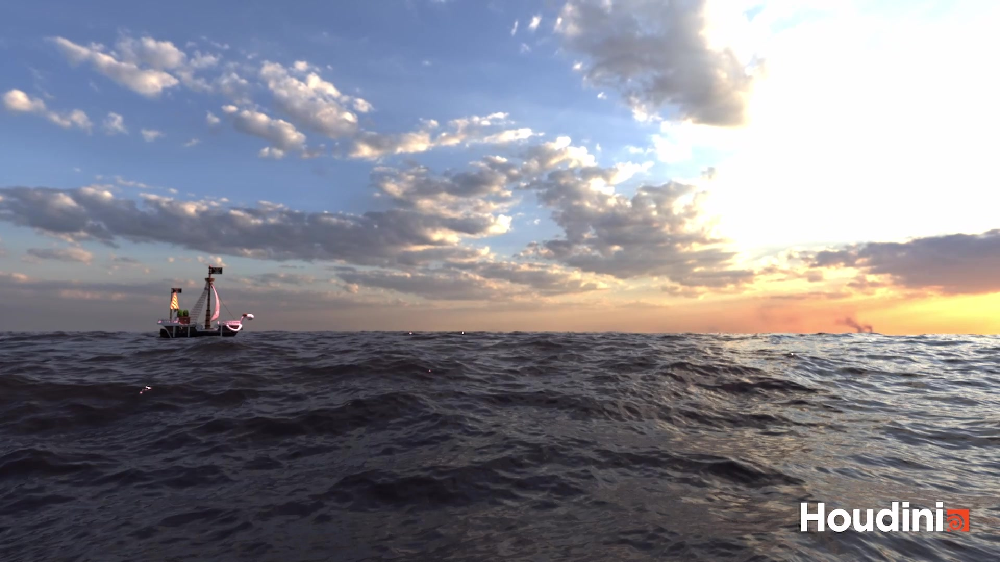

MSc Computer Animation & Visual Effects
Bournemouth University
Relevant study areas
- Animation Software Engineering
- CGI Tools & CGI Techniques
- Simulation and Rendering
- Pipeline and Technical Direction
- Group Project & Industry Brief
- Master's Project
LIGHTING · LOOK DEVELOPMENT · PIPELINE
Lighting Artist | Pipeline TD | VFX Artist
Cinematic lighting and look development.
Python tools for reliable rendering and VFX pipelines.
01 / IN MOTION
Lighting, look development
and visual effects.
Explore my contribution, process and collaborators:
Spaceship Broken Horizons Norwegian Lakeside Snowbound Environment02 / SELECTED PROJECTS
Shot lighting, look development
and the tools behind the render.
 LIGHTING TD · LOOK DEVELOPMENT
LIGHTING TD · LOOK DEVELOPMENT
My role Look development · lighting · rendering · compositing
A complete shot workflow with procedural weathering, RenderMan AOVs and a controlled Nuke finish.
Maya · Katana · RenderMan · OSL · Nuke · Python
 LIGHTING TD · LOOK DEVELOPMENT
LIGHTING TD · LOOK DEVELOPMENT
My role Look development · lighting · rendering · compositing
A 360-frame USD shot with RenderMan AOVs, production diagnostics and a controlled Nuke finish.
Blender · USD · Katana · RenderMan · Nuke · Python

LIGHTING & LOOK DEVELOPMENTMy role Lighting · cinematography · rendering
A group cinematic exploring overcast light, atmospheric depth and visual storytelling.
Unreal Engine · Lumen · Movie Render Queue

ENVIRONMENT LIGHTINGMy role Lighting · look development · composition
Natural daylight, reflective water and a warm visual rhythm across a Nordic retreat.
Lighting · Look Development · Composition

ENVIRONMENT LIGHTINGMy role Lighting · camera · colour correction
Winter daylight, atmospheric depth and a cinematic grade for a mountain landscape.
Unreal Engine · DaVinci Resolve
 LIGHTING & RENDERING
LIGHTING & RENDERING
My role Procedural geometry · materials · lighting
Exploring realism through surface detail, materials and light.
Python · RenderMan · RIB · HDRI

01 · MAYA SCENE
02 · ARNOLD BEAUTY
03 · EXR VERIFIEDMy role Python development · Maya integration
Preflight, Arnold rendering and EXR verification inside Maya.
Python · Maya · Arnold · OpenImageIO
 Autodesk Maya
Autodesk Maya
 Python
Python
 AOVs
AOVs
My role Product design · pipeline architecture · Python development
Open-source EXR/AOV validation with Cryptomatte-aware diagnostics, temporal outliers and sequence QA.
Python · OpenEXR · NumPy · PySide6 · pytest
My role Renderer development · PBR shading
A CPU renderer evolved into a physically based metallic look-development tool.
Python · NumPy · Numba · Cook–Torrance · HDRI

FX & SIMULATIONMy role FX simulation · lighting · scene assembly
Ship–water interaction, from a FLIP region to an open ocean.
Houdini · FLIP · Solaris · Karma
My role Director · Cinematographer · Camera Operator
Live-action work spanning natural-light portraits, low-key interiors and visual storytelling.
Camera · Composition · Light
03 / ABOUT ME
I'm Joshua, a Lighting Artist, Pipeline TD and VFX Artist with a background in cinematography, computer graphics and software development.
I worked as an Assistant Cinematographer / Assistant DoP at Lightoon Films in Mexico. That experience shaped how I approach light, composition, colour and storytelling.
I specialised in CG lighting at Lost Boys | School of VFX, then continued into rendering, simulation and pipeline development through my MSc at Bournemouth University. I enjoy creating cinematic images while understanding and improving the systems behind them.
Junior Lighting Artist · Lighting TD · Lighting & Compositing Artist · Pipeline TD · Assistant Technical Director / ATD · Technical Artist
04 / THE TOOLKIT
05 / THE FOUNDATION
Bournemouth University
Lost Boys | School of VFX
Six-month specialised programme · Katana · Arnold · Nuke
Universidad Autónoma de Guadalajara (UAG)
06 / CURRICULUM VITAE
JOSHUA MEDINA · LIGHTING ARTIST
Professional experience, lighting and pipeline projects, core skills and education in a concise one-page document.
View CV PDF Download PDF07 / GET IN TOUCH
For lighting, look development and pipeline roles.